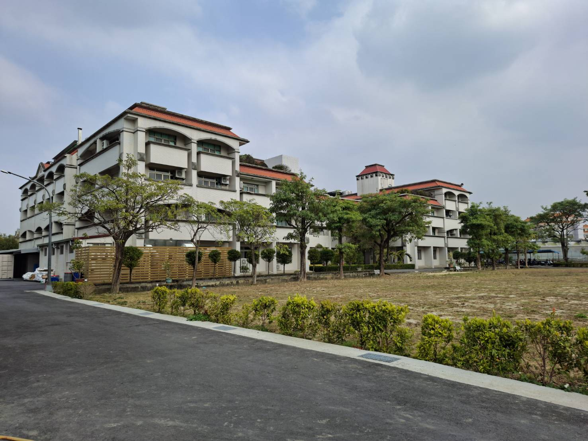
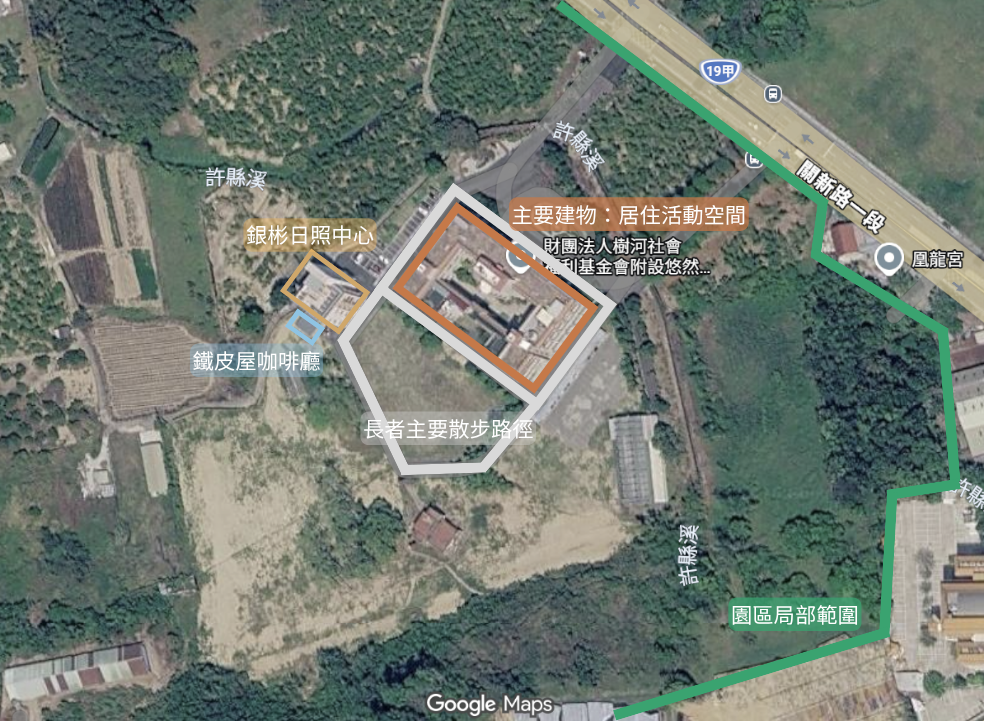
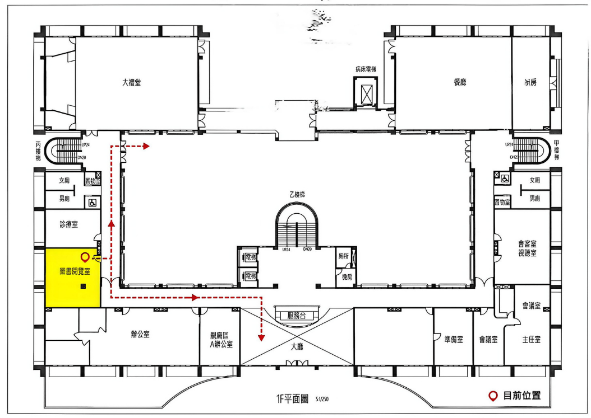
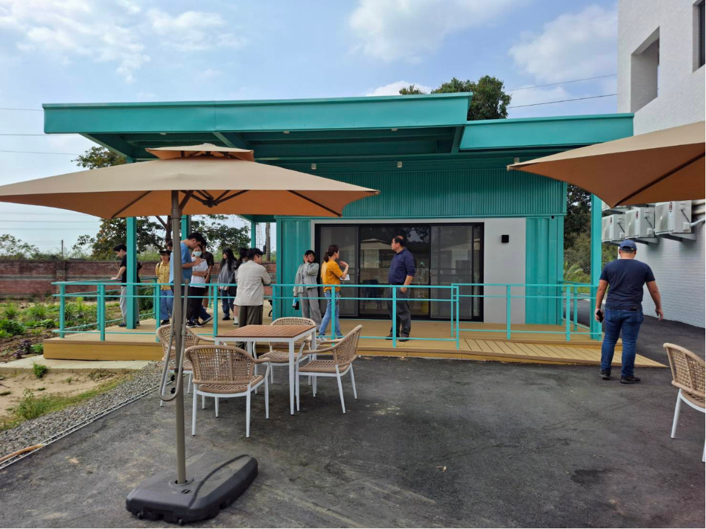
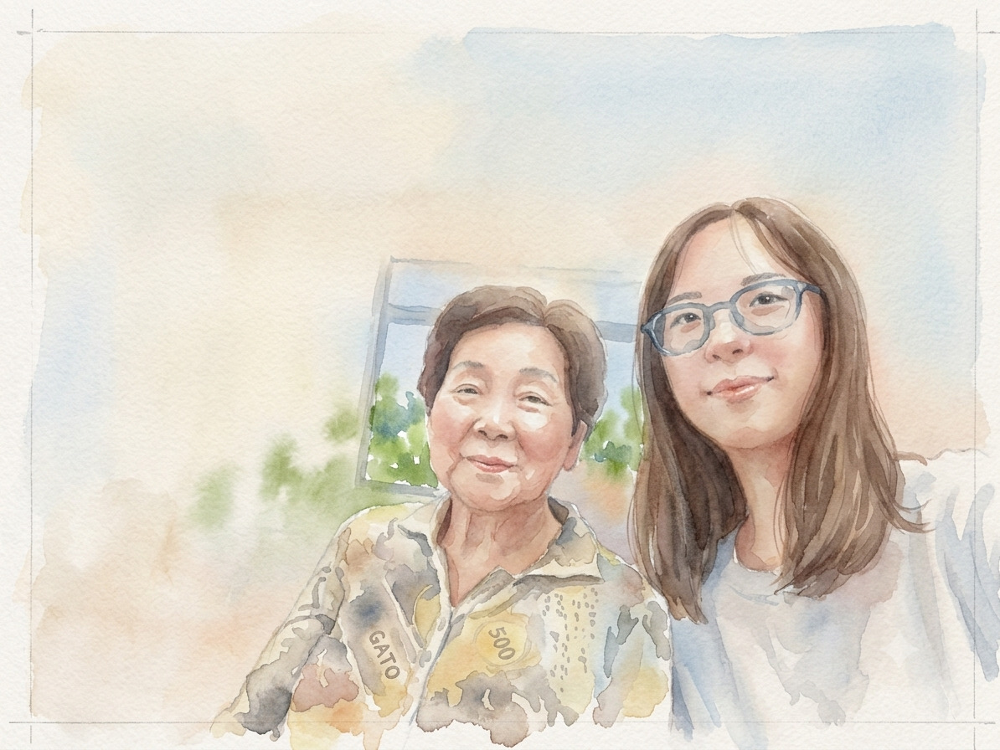
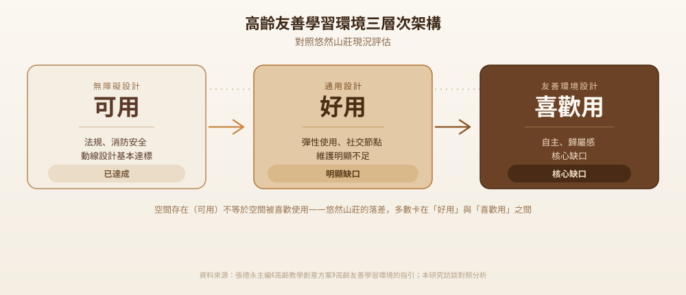
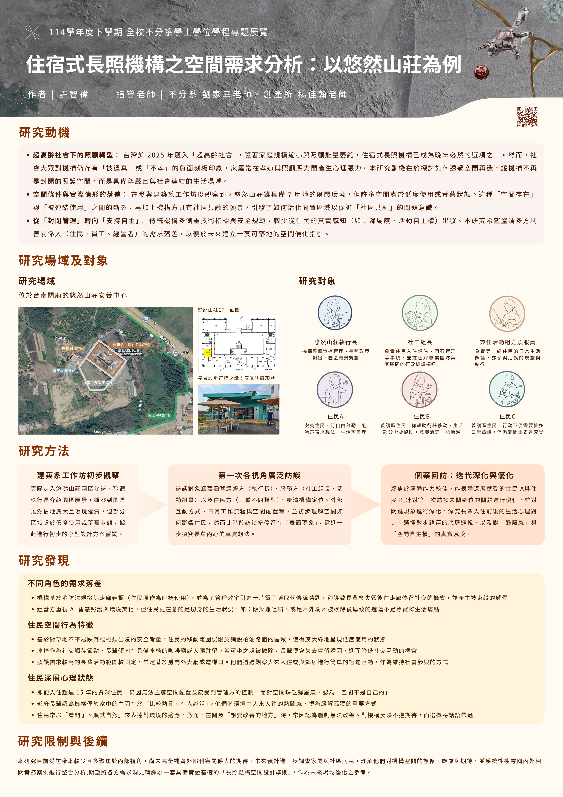

台灣即將邁入超高齡社會，住宿式長照機構逐漸成為晚年生活無法迴避的選項之一。 這學期，我走進台南關廟的悠然山莊，透過訪談經營方、第一線工作人員與三位不同狀態的住民， 試著釐清一件事：經營方、工作人員與住民，對於空間需求的落差究竟是什麼。

本研究以長照機構——悠然山莊為研究場域，採質性訪談法，訪談對象涵蓋經營方、服務方， 以及園區內部不同狀態的住民，並針對其中兩位溝通能力較佳的住民做了第二次深度回訪。 研究發現可歸納為三個面向：不同角色間的需求落差、住民的空間行為特徵，以及住民的深層心理狀態。
台灣已於 2025 年正式邁入超高齡社會，家戶規模持續縮小，傳統家庭的照顧能量大幅萎縮， 住宿式長照機構的需求因此急遽增加。然而社會大眾對機構仍普遍存有「被遺棄」或「不孝」的 負面刻板印象，使得家屬常在孝道觀念與實際照顧壓力之間拉扯。
這個研究的起點，是參與建築系工作坊、實地走進悠然山莊的經驗。 園區佔地廣闊、環境優質，但聆聽執行長介紹園區願景之餘，也觀察到部分區域處於低度使用甚至荒蕪的狀態， 而機構本身也懷抱著活化空間、促成社區共融的願景。這構成了研究最初的問題意識：如何活化閒置空間以促進社區共融。
但隨著訪談逐漸深入，問題意識逐漸延伸擴展為對機構內部使用者真實需求的關注。 要回應機構「社區共融」的願景，不能只停留在閒置空間如何被重新利用的層次， 更必須先釐清住民在既有生活空間中，於空間使用與心理感受兩個層面上真正面對的需求與困境。
悠然山莊位於台南關廟，屬於長照分級制度中的 A 級單位（個案管理中心）。園區佔地約 7 甲，主要建物為ㄇ字型配置，內部依住民狀態分為安養、養護（一般養護、管路養護、重症照護）等不同照護分區。
園區局部衛星圖

悠然山莊 1F 平面圖

長者散步行經之鐵皮屋咖啡廳現狀

機構整體營運管理、長照政策對接、園區願景規劃
負責住民入住評估、個案管理等事項，並擔任跨專業團隊與家屬間的行政協調樞紐
負責第一線住民的日常生活照護，亦參與活動的規劃與執行
安養住民，可自由移動，能清楚表達想法，生活可自理
養護區住民，仰賴助行器移動，生活部分需要協助，意識清楚、能溝通
養護區住民，行動不便需要較多日常照護，但仍能簡單表達感受
受限於一學期的時間，於方法與訪談範圍做了取捨。
實地走入悠然山莊園區參訪，聆聽執行長介紹園區願景，初步觀察空間使用現況，並嘗試小型設計方案。
整理悠然山莊的服務定位、組織脈絡與近期發展，作為訪談前的背景準備。
釐清機構目標、限制條件、過去對外互動經驗，並確認後續訪談對象建議名單。
完成對社工組長、照服兼活動組員，以及住民 A、B、C 的初步訪談。這階段的回應多停留在表面現象，尚未真正觸及住民內心的想法。
聚焦溝通能力較佳的住民 A、B，針對第一次訪談未問到位之處優化與深化，探究入住前後的生活心理對比、散步路徑的底層邏輯，以及對「歸屬感」與「空間自主權」的真實感受。住民 C 因年事已高、時間配合度限制，暫停第二次訪談。
將兩輪訪談內容系統整理，歸納出下方三項研究發現。

與其中一位訪談對象的合照（經 AI 處理）
機構經營方、第一線工作人員與住民三方，對同一項空間或管理措施，常有截然不同的感受與優先順序—— 而且這種落差不只存在於「機構說的」與「住民感受到的」之間，連機構內部「正式政策」與「實際執行」 之間也存在落差。經營方傾向重視自立支援計畫、動線效率與環境美化等「重大議題」， 但住民自己反覆強調、念念不忘的，往往是飯菜口感、戶外遮蔭不足這類貼身的「小事」， 兩者呈現出明顯的優先順序錯位。
住民的空間使用行為高度一致，且能被多方來源交叉驗證：看到有椅子的地方就會停留。 咖啡廳、大廳、服務台附近因為有桌椅而成為熱門停留點；座椅是重要的社交觸發節點， 若可坐之處被撤除，長輩便會失去停留誘因，社交互動的機會也隨之降低。 此外，出於對草地不平、蛇類出沒的安全考量，住民的移動範圍普遍侷限於鋪設柏油路面的區域， 使廣大的綠地呈現低度使用的狀態。
在較深入的第二次回訪中，浮現出比表面生活描述更核心的心理議題：即便入住超過 15 年的資深住民， 仍因感受到管理方對行動範圍、作息安排的規範，而缺乏對空間的歸屬感，認為「空間不是自己的」。 部分長輩以「看開了、順其自然」來表達對環境的適應，但問及「想要改善的地方」時， 常因不抱期待而選擇將話語帶過。這提醒研究者，理解長者的口語回應時，不能只停留在字面陳述。
完成訪談分析後，我另外找到教育部委託編製的《高齡友善學習環境的指引》， 並嘗試用它反過來檢視悠然山莊的訪談發現。這份指引原本是為「樂齡學習中心」—— 也就是長者白天到訪、上完課就離開的社區學習場所——所設計的，並不是為住宿式機構寫的。 但指引背後的邏輯，其實是針對「老化中的身體與心理」而不是針對特定空間類型： 無論在哪種場所，高齡者共同面對的視力、聽力、行動能力變化都是一樣的。 這讓它成為一個可以借用、但需要保留場域差異的分析工具。

悠然山莊在這個最基本的層次大致達標——建築符合法規、消防安全設施齊全， 走廊動線也依無障礙原則設計。但訪談中反覆浮現一種「以法規為天花板」的心態： 走廊之所以保持淨空，是因為不能違反消防規定，而不是因為想讓住民好走、好停留。
再往上一層，缺口就開始出現。通用設計強調的「彈性使用」——空間可以隨使用者需求調整—— 在悠然山莊反而是反過來運作的：原本走廊上的鞋櫃，是住民休息、社交的非正式據點， 卻因消防檢查被撤除。管理效率與住民的日常使用習慣，在這裡明顯地互相拉扯。
最外層、也是缺口最大的一層，是「喜歡用」——空間是否讓人有歸屬感、願意留下來。 即便住了超過十五年，訪談中的住民仍然覺得「空間不是自己的」。廣大的戶外綠地， 也因為擔心蛇類出沒與地面不平，被心理上放棄使用。物理空間存在， 不代表長者真的把這裡當作自己的家。
這三層落差，可以濃縮成一個真實發生的小事件。走廊上原本擺著鞋櫃，除了收納鞋子， 也在無形中提供了一處可以隨時坐下來歇腳、跟路過鄰居聊兩句的地方。後來因為消防安全檢查， 鞋櫃被要求撤除——這個決定完全合乎法規（可用層次沒有問題），卻直接拿掉了住民僅存的 非正式社交節點（好用層次的損失），也在住民心裡留下「這裡的規則不是為我設計的」的感受 （喜歡用層次的核心缺口）。一個單純的合規動作，同時踩過了三個層次。
本研究目前受訪樣本仍較為有限，訪談視角多集中於機構內部（經營方、服務方與住民方）， 尚未涵蓋原訂計畫中的家屬與附近居民兩類外部利害關係人， 使研究在呈現機構轉型過程中多方利害關係人交互需求的全貌上仍有限制。
第一次訪談僅使用 Notion AI 的會議記錄功能，未同步進行錄音，加上該工具對台語辨識能力有限， 導致部分訪談內容流失、事後難以補齊；訪談期間的時間分配也未妥善規劃， 一度因其他課程作業排擠了專題進度；此外，訪談追問的深度仍待加強， 部分受訪者提及的關鍵線索未能即時追問下去，需仰賴事後重聽逐字稿才發現遺漏之處。
質性訪談的價值不僅在於蒐集「答案」，更在於理解受訪者表達背後的脈絡與限制—— 包括語言腔調的隔閡、長者口語表達的限制，以及如何在有限時間內逐步建立信任。 從最初規劃的多元方法與五類利害關係人，到實際聚焦於質性訪談與機構內部三類角色， 這個調整過程也讓我學會在有限資源下，重新評估研究範圍的優先順序。

點擊會在新分頁開啟 PDF 預覽，可自行決定是否另存下載。 完整訪談逐字稿涉及機構與住民隱私，未公開於網站上，如作學術審查用途請另行索取。 研究過程中使用 Notion AI、Perplexity、NotebookLM、ChatGPT、Claude、FlexClip 協助資料整理與文字潤飾， 完整 AI 使用聲明詳見結案報告附錄。
內政部建築研究所（2025）。《住宿式長期照顧機構空間設施設計之研究》（報告編號：PR11408-0011）。
林金定、嚴嘉楓、陳美花（2005）。質性研究方法：訪談模式與實施步驟分析。《身心障礙研究季刊》，3（2），122-136。
吳俊毅（2021）。《幸福銀髮長期照顧機構經營模式規劃之研究》（碩士論文，嶺東科技大學）。
洪子晴（2014）。《高齡者入住安養機構決策歷程之研究》。
張書齊（2018）。《機構式長期照顧家屬照顧壓力與機構衝突之研究》。
許媖婷（2016）。《高齡者入住安養機構影響因素之探討—以雙連安養中心為例》（碩士論文，中國文化大學）。
許雅涵（2018）。《老人安養機構經營管理之研究—以台南市悠然山莊為例》（碩士論文，長榮大學）。
郭良蕙（2010）。《台灣地區老人安養機構經營管理策略之研究—以台北市民營老人安養機構為例》（碩士論文，中國文化大學）。
陳佩純（2004）。《應用焦點團體探討使用者需求脈絡之研究》（碩士論文，台北科技大學）。
黃綉雯（2021）。《社區高齡者團體音樂活動之經驗歷程：焦點團體分析》（碩士論文，高雄醫學大學）。
詹欣宜（2015）。《大型高齡者照顧設施實施「在地老化」之探討—以「S」安養中心為例》（碩士論文，東海大學）。
蔡宜呈（2018）。《老人安養機構住民生活滿意度之研究—以頤苑自費安養中心為例》（碩士論文，中國文化大學）。
劉正、齊力（2019）。《臺灣高齡者的居住狀況與機構照顧的需求趨勢》。國土及公共治理季刊，7（1），70-85。
衛生福利部統計處（2017）。《106 年老人狀況調查抽樣設計》（附件 2）。
本學期全校不分系學士學位學程之專題成果，皆彙整於此網頁中，可瀏覽所有同學的研究主題與執行方向。